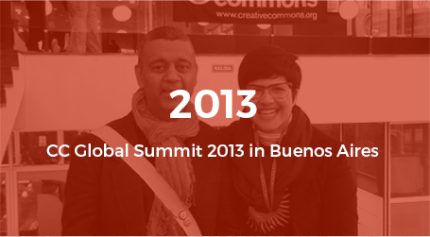
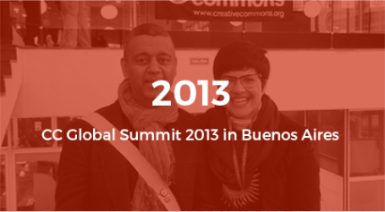

"Hello! Sharing world"
CREATIVE COMMONS GLOBAL SUMMIT 2015
The Global Summit brings together the community of experts, academics, and activists who comprise the Creative Commons affiliate network in a different country every two years. This year, we hope to expand our invitation list including organizations and individuals.
Creative Commons Global Summit 2015 Logo
The logo of CC Global Summit 2015 was decided through the logo competition from 8, June to 7, July.

See the past CC Global Summits
Take a look at the past two CC Global Summits which took place in Buenos Aires and in Warsaw
 

Partner